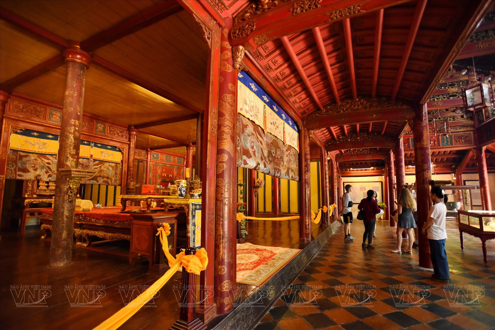

Lăng Minh Mạng
⭐ 4.5 / 5
📍 Địa chỉ: phường Kim Long, TP Huế
🕒 Giờ mở cửa: 7:00 - 17:00 hằng ngày
🎫 Giá vé: Người lớn: 150.000đ
Trẻ em (7-12 tuổi): 30.000đ
(giảm 50% cho người dân địa phương)
📖 Giới thiệu
Lăng Minh Mạng là một trong những lăng tẩm đẹp nhất triều Nguyễn, được xây dựng từ năm 1840 và hoàn thành năm 1843. Đây là nơi yên nghỉ của vua Minh Mạng – vị vua thứ hai của triều Nguyễn.
Lăng nổi bật bởi kiến trúc cân đối, uy nghiêm và hài hòa với thiên nhiên. Hồ nước, cầu đá, rừng thông cùng các công trình cổ kính tạo nên vẻ đẹp trang nghiêm nhưng thơ mộng.
⚠️ Lưu ý
👟 Nên mang giày dễ di chuyển.
🚯 Không xả rác trong khuôn viên.
📷 Không trèo lên công trình cổ để chụp ảnh.
🌤️ Mang nước uống nếu đi trời nắng.
🏯 Các công trình nổi bật
● Đại Hồng Môn: Cổng chính của lăng.
● Bi Đình: Nơi đặt bia đá ghi công đức vua.
● Hiếu Đức Môn: Cổng dẫn vào khu chính điện.
● Minh Lâu: Công trình kiến trúc nổi tiếng giữa đồi cao.
● Bửu Thành: Nơi an táng vua Minh Mạng.
📸 Gợi ý tham quan
● Đi vào buổi sáng hoặc chiều mát.
● Dạo bộ quanh hồ để ngắm cảnh đẹp.
● Chụp ảnh tại cầu đá và Minh Lâu.